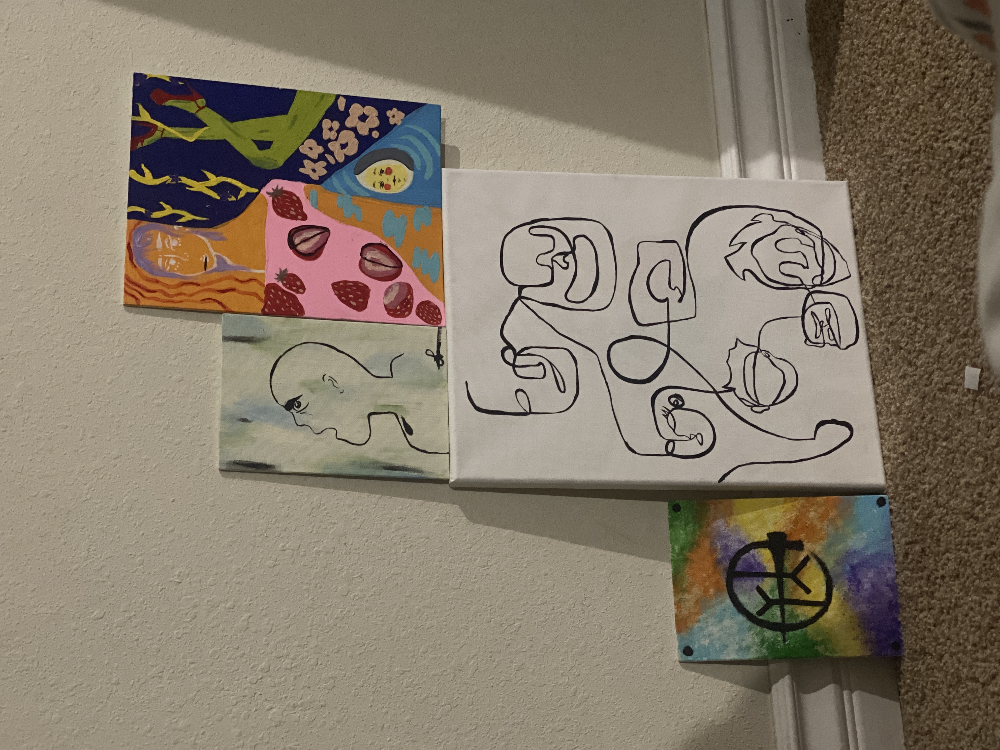
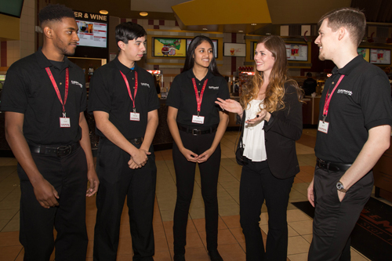
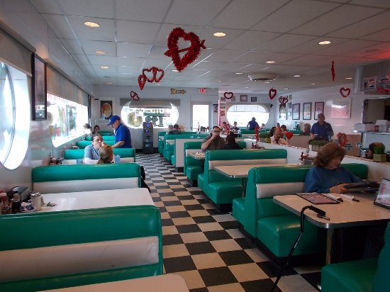
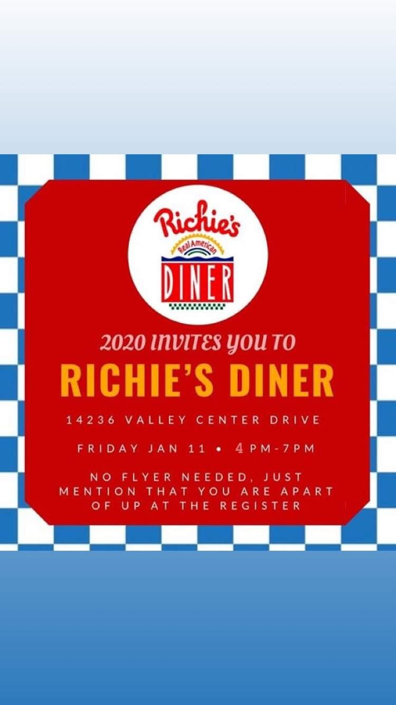
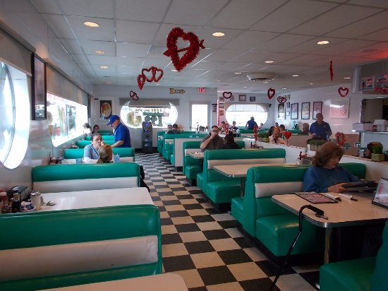
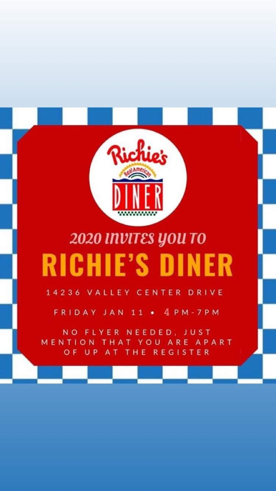

Leslie Gutierrez
Leslie Jazmin Gutierrez
I am 18 years old. I have experience in resturant and an office environment.
I am an incoming freshman at UCR. I am going in as a Pre-Business Major.
I am looking for a part-time job that works with my school schedule. I have experience as a hostess and worked my way to a waitress. I also have a bit of experience working at an office.
I am a people person who adapts and learns fast. My favorite part about working is human interaction. In a restaurant you meet people from different backgrounds and the small conversations make the work fly by.
I loved providing great service that made a customers day turn around or by creating a memorable experience for them, they became regulars. I decided to go into my first year as a pre-business major because I have a passion for creating whether it be art, cooking, sewing etc.
I see myself investing in my education for the next few years. I do not have a set career path, I would love to be an educator for young children for a while until I can start up my own business where one day I hope to run my own boutique shop where I sell goods such as my art work, crystals, baked goods, clothing, accessories and much more.
Another reason I went into business is because my father also is in the process of running a small business and with my formal education I believe I can be a great asset to him. If i can help him bring in revenue, I hope to become a partner and get a percentage of that income.
With that money I plan to start up my own business and at that point I will have some experience first hand at running an establishment. I love to work with multiple people at once. I think I work well with others as a leader and as a teammate. I am the type of person that will step up if no one else will, and I am no stranger to following directions for the sake of others. My biggest weaknesses are that I am very empathetic and self aware. I take everything to heart and will notice my error before being told.
I also may not ask for help when I need it to avoid being a nuisance. It is something I have been working on because I find that the taste would be done faster if I get some guidence. In high school I was in ASB, I enjoyed the involvement and planning. By the end of my first year I was voted to be vice president of my class, unfortunately I could not continue due to unprecedented financial hardships however my greatest take away was that I was capable of more then I imagined.
Though the events may seem simple there were often disagreements that needed to be resolved and as students we needed to figure alot completely independently. I am a hard worker, I love to keep busy. As much as I love my free time, If i have nothing to do for too long I feel like I am wasting my time. There is always something to be done.
Experience
Developer
• Started as a hostess
•Checked guests in/out,cleaned, ran food out
• Promoted to waitress
Secretary
• Answer phone
• Send Fax
• Print and make copies
• Produce insurance quotes
Education
University of California Riverside
Portfolio






